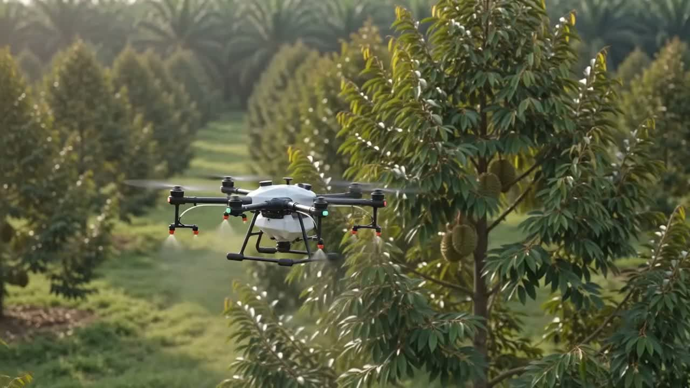

Submit Inquiry提交询价
Fill in a simple form with your land size and needs.填写简单表格，说明农地面积与需求。

Drone X provides drone spraying and fertilizing for farmers, plantation owners and agricultural operators: faster, more even coverage of large fields with less manpower, lower cost and safer operations.Drone X 为农夫、园主与农业运营商提供无人机喷药与施肥服务，协助更快速、均匀地覆盖大面积农地，减少人力与时间成本，同时提高作业安全性。
Fill in a simple form with your land size and needs.填写简单表格，说明农地面积与需求。

Our team assesses your land condition, free of charge.团队免费评估农地状况。

A professional plan for routes and chemical volume.专业团队规划路线与用量。

We complete the job and hand you a work report.完成作业后提供工作报告。
Enter your land details and get an instant estimate of the service you need.输入农地资料，立即估算所需的服务与无人机数量。
Estimates use sample coverage rates and will be calibrated with official Drone X operating data before launch.估算目前采用示例覆盖率，正式上线前将以 Drone X 官方作业数据校准。
Yes. Every job is flown by a licensed pilot on a pre-planned route with buffer zones around houses, animals and waterways. Spray volume is controlled precisely, and operations are insured.安全。每次作业由持牌飞手按预先规划的路线执行，房屋、动物与水源周围设有缓冲区。喷洒量精准控制，作业也有保险保障。
Pricing is mainly based on land area (per acre or hectare) and the type of service. After a free site consultation we give you a fixed written quote, with no hidden charges.费用主要按农地面积（英亩或公顷）与服务类型计算。免费勘察后我们会提供固定的书面报价，没有隐藏收费。
There is no strict minimum. Smaller plots can be grouped with nearby jobs to keep costs reasonable. Tell us your land size and we will suggest the most economical arrangement.没有严格的最低面积。较小的地块可以与附近的作业一起安排，以控制成本。告诉我们您的面积，我们会建议最省钱的安排。
Most common liquid pesticides and fertilizers are suitable. You are welcome to supply your own; our team will first check that it is safe and effective for drone application.大部分常见的液态农药与肥料都适用。您可以使用自己购买的农药，我们的团队会先确认它适合无人机喷洒且安全有效。
Typically within about one week of confirming your quote, depending on season and weather. Urgent jobs can often be arranged sooner. Contact us early during peak seasons.确认报价后通常约一周内可安排，视季节与天气而定。紧急作业通常可更快安排；旺季建议提早联系。
A drone covers large areas quickly. As a guide, a 50-acre plot is usually completed within a few hours. Try the calculator below for an estimate based on your own land.无人机作业速度很快。以 50 英亩为例，通常几个小时内即可完成。可使用下方计算器根据您的农地估算时间。
It usually saves chemicals. Drones spray evenly at a controlled rate, so most farmers use less than manual spraying while getting better coverage.通常更省。无人机以受控速率均匀喷洒，多数农夫的用药量比人工喷洒更少，覆盖却更全面。
We monitor the weather before every job. If conditions are unsafe or the spray would wash off, we reschedule to the next suitable day at no extra charge.每次作业前我们都会监测天气。如天气不适合作业或药剂会被雨水冲走，我们会免费改期到下一个合适的日子。
You or a representative should join the first site visit. On spray day we mainly need access to a water source and the area cleared of people and livestock. We will guide you through it.首次勘察时建议您或代表在场。作业当天主要需要水源，以及确保作业区没有人员和牲畜。我们会一步步指导您准备。
Yes. Drones follow the terrain automatically and handle slopes and uneven ground far more easily than manual crews or tractors. Hillside orchards are a common job for us.可以。无人机会自动跟随地形飞行，处理山坡与不平整地面比人工或拖拉机容易得多。山坡果园是我们常见的作业类型。
All our pilots hold the required certifications and operate on a compliant platform. Every job is covered by operational insurance, so you are protected if anything goes wrong.我们所有飞手都持有所需执照，并在合规平台上作业。每次作业都有作业保险，如有意外您都受到保障。
Yes, that is exactly what the calculator below is for. Enter your land size and needs to get an instant estimate, then request an exact quote with one click.可以，下方的计算器正是为此而设。输入农地面积与需求即可立即获得估算，再一键获取精准报价。

An 8-acre hillside orchard where manual spraying meant workers carrying tanks up steep, uneven ground.8 英亩的山坡果园，过去人工喷洒需要工人背着药桶爬上崎岖山坡。
Full orchard covered in under 3 hours, no one on the slope.3 小时内完成全园喷洒，山坡上无需人力作业。

A 40-acre paddy plot that used to take a large crew several days to spray evenly.40 英亩稻田，过去需要大批人力花上数天才能均匀喷洒。
Whole plot sprayed in a single morning, even coverage edge to edge.一个早上完成整片田喷洒，覆盖均匀无死角。

A mid-size estate where wet-season access roads often delayed manual fertilizing rounds.中型油棕园，过去雨季道路泥泞常拖延人工施肥进度。
Fertilizing completed on schedule despite the wet ground.即使地面湿滑，施肥仍按时完成。